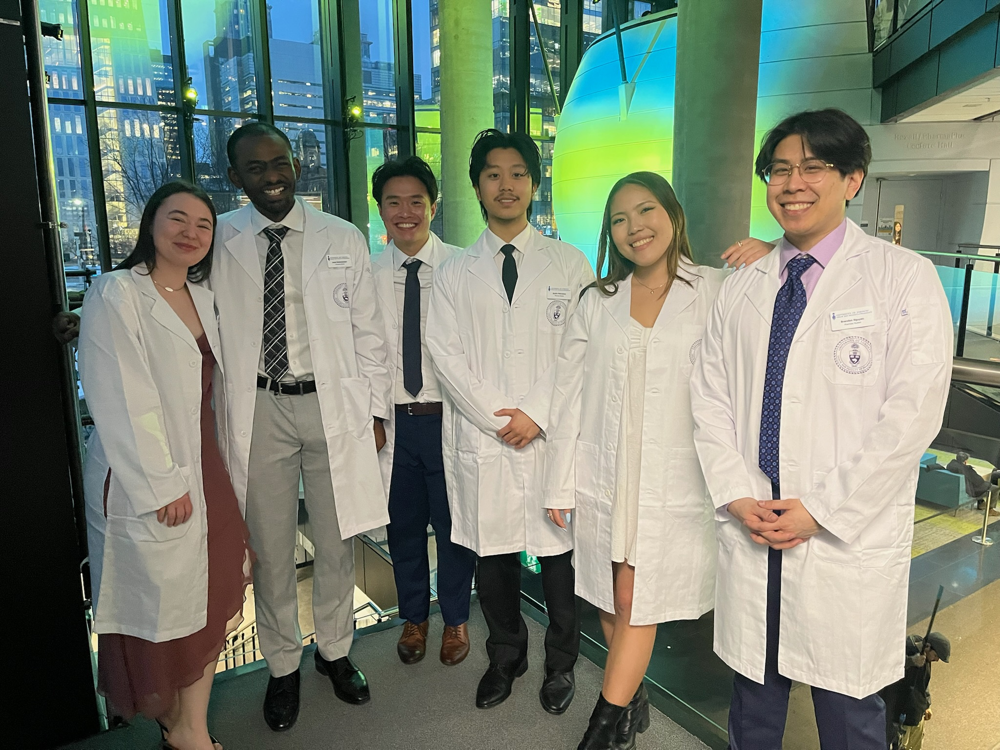
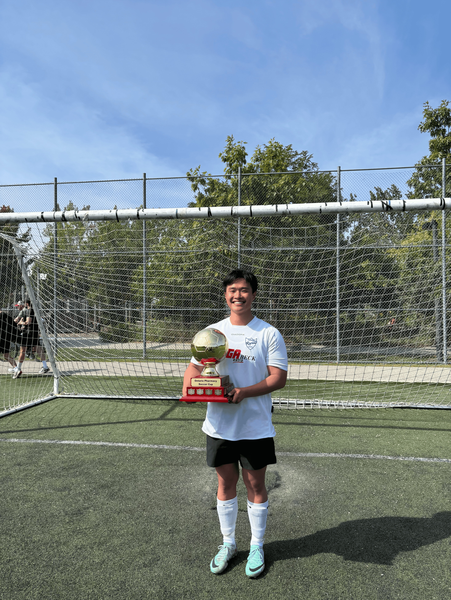
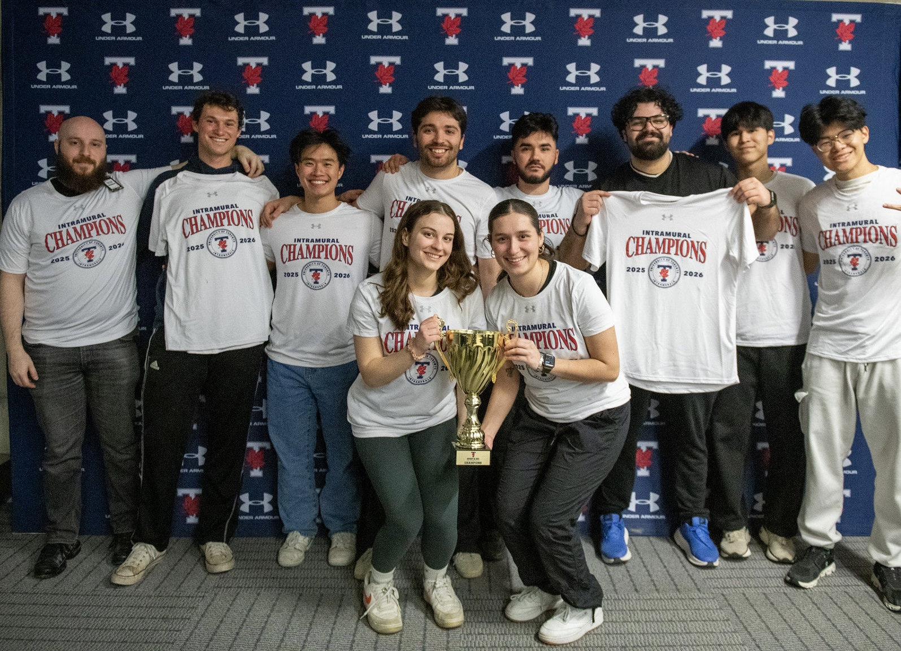
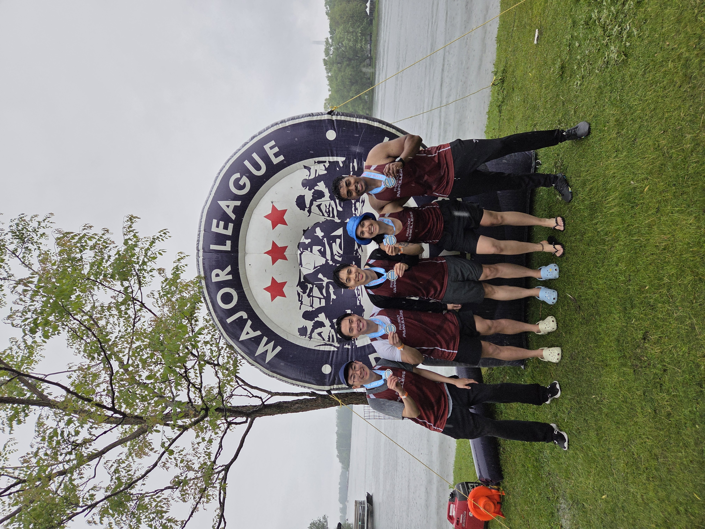
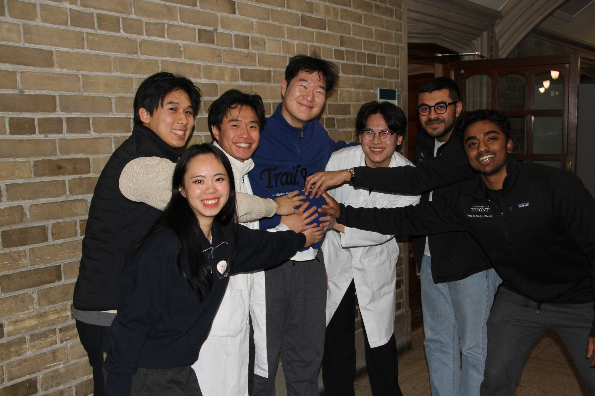

Beyond the dispensary
Pharmacy is more than a profession — it's a community. Outside of academics and work, I stay active in student leadership, athletics, and volunteering.
CAPSI Representative, 2T8 Class Council
LeadershipLiaison between the 2T8 cohort and the Canadian Association of Pharmacy Students and Interns — coordinating faculty-wide events including the Compounding Competition and mentoring new students.
Finance Director, Painkillers Dragon Boat Team
AthleticsManaging the team's operating budget covering competition registration, equipment, and jerseys — collaborating on fundraising initiatives and maintaining detailed financial records.
Exercise & Training Assistant, CCCARE
VolunteerProvided one-on-one exercise guidance to post-cancer patients, creating a safe, motivating environment and applying kinesiology knowledge to supervised exercise classes.





